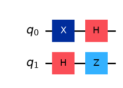
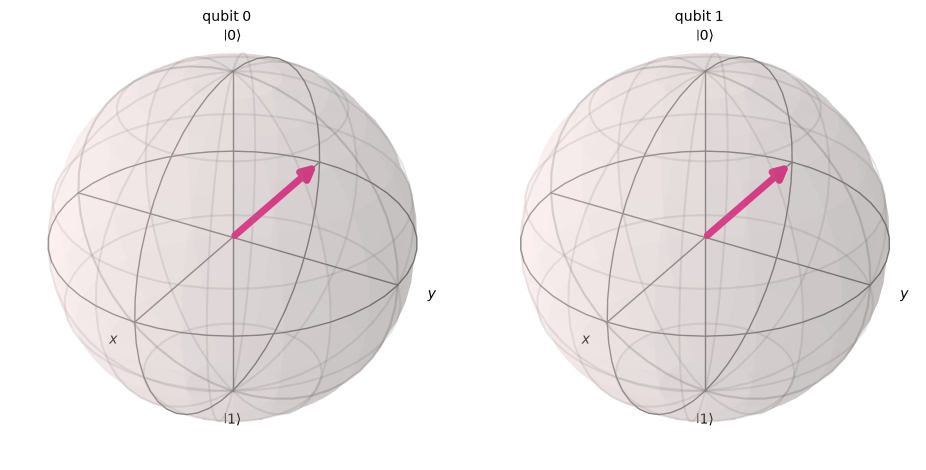
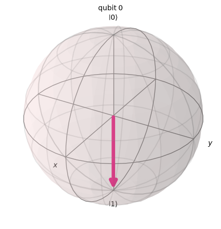

2.2. Operators#
An operator is defined on a Hilbert space and acts on a vector in the same Hilbert space. More precisely, we use linear operators. In this section, we learn the following mathematical operations associated with operators. Physical interpretations will be followed after this section.
operation |
mathematical expression |
|---|---|
operator times ket |
\(A |\psi\rangle\) |
adjoint operator |
\(|\psi\rangle A^\dagger\) |
scalar multiplication |
\(\lambda A, \quad \lambda \in \mathbb{C}\) |
operator sum |
\(A+B\) |
identity operator |
\(I\) |
operator multiplication |
\(AB\) |
commutation |
\([A\, B]=AB-BA \) |
matrix element |
\(\langle \psi \vert A \vert \varphi \rangle\) |
trace |
\(\text{tr} A\) |
dyad |
\(|\psi\rangle\langle\varphi|\) |
projection operator |
\(P^2=P\) |
Self-adjoint operators |
\(A^\dagger = A\) |
Unitary operator |
\(U^\dagger U = I\) |
Eigenvalue and eigenvector |
\(A |a_i\rangle = \lambda_i |a_i\rangle\) |
Pauli operator |
\(X, Y, Z\) |
function of operator |
\(f(A)\) |
2.2.1. Operator times ket#
When a operator \(A\) acts on any ket in the Hilbert space, it transforms the ket to another ket in the same Hilbert space,
Similarly every bra is transformed as
where \(A^\dagger\) is Hermite conjugate or adjoint of \(A\). The adjoint of the adjoint operator is the original operator, that is \((A^\dagger)^\dagger = A\).
It is wrong to think that \(A^\dagger\) always act on bra. It can be applied to ket and \(A^\dagger | a\rangle\) is perfectly OK. However, in general \(A |a\rangle \ne A^\dagger |A\rangle\). Therefore \(A\) and \(A^\dagger\) are two different operators. By definition, the adjoint expression of \(A^\dagger |A\rangle\) is \(\langle a| (A^\dagger)^\dagger = \langle a| A\).
Example 2.2.1 Operator \(X\) transforms the basis vectors as \(X |0\rangle \equiv |1\rangle\) and \(X|1\rangle \equiv |0\rangle\).
Example 2.2.2 Consider \(H\) transforms the basis vectors as \(H|0\rangle \equiv |+\rangle\) and \(H|1\rangle \equiv |-\rangle\). (See (2.5) for the definition of \(|\pm\rangle\).) \(H\) is known as Hadamard gate and one of the very important quantum gates.
2.2.2. Scalar multiplication#
\(\lambda A\) is another operator where \(\lambda\) is any complex number. You can place the scalar in the either side of the operator, i.e., \(\lambda A = A \lambda\). The adjoint of \(\lambda A\) is \(\lambda^* A^\dagger\). Notice that the complex conjugate of the scalar in the adjoint.
The following associativity holds:
Exercise 2.2.1 Find the adjoint of \(\lambda A |a\rangle\).
2.2.3. Linearity#
When an operator acts on a superposition state, the following linearity holds:
where \(\alpha, \beta \in \mathbb{C}\).
Exercise 2.2.2 Show that \(H|+\rangle = |0\rangle\) and \(H |-\rangle = |1\rangle\) where \(H\) is the Hadamard gate.
2.2.4. Operator sum#
The sum of operators satisfies the following distributivity:
2.2.5. Operator products#
For any operators \(P\) and \(Q\) in a Hilbert space, the product \(PQ\) is also an operator in the same Hilbert space. When \(Q\) is applied on \(|a\rangle\) and \(P\) is applied on the result of the first operation, the final result is also a vector in the same Hilbert space:
where \(|b\rangle = Q |a\rangle\). The associativity \(P (Q|a\rangle) = (PQ) |a\rangle\) holds.
Similarly, when we apply \(P\) on \(|a\rangle\) first and \(Q\) afterward, the associativity \(Q (P|a\rangle) = (QP) |a\rangle\) holds as well. In general the outcomes of these two operations are different and thus \(PQ \ne QP\). In other words, \(P\) and \(Q\) do not commute. The difference between \(PQ\) and \(QP\) is expressed with commutator
Only when \([P,Q]=0\), we can change the order of operations. The commutation relation is of fundamental importance in quantum mechanics.
For some operators, anti-commutation
also plays an important role.
The dual of the above transformation is
Using the associativity \(PQ\), \(\langle c| = \langle a| (PQ)^\dagger\). By direct comparison, we find
We learned a similar relation in a linear algebra course: \((PQ)^T=Q^T P^T\) where \(P\) and \(Q\) are matrices and \(T\) is transpose. We will see that this equality is indeed equivalent to (2.6).
2.2.6. Identity operator \(I\)#
The simplest operator is the identity operator \(I\) which transforms a vector to itself:
The adjoint of the transformation is given by
It is easy to show that for any operator \(A\),
The identity operator looks trivial. However, it is ubiquitous in quantum computation. First of all, it is needed to define inverse operators. The inverse operator of \(A\) is defined by
Not all operators have their inverse but most of operators we use in quantum computation do.
Exercise 2.2.3 The identity operator \(I\) satisfies \(I = I^{-1} = I^\dagger = I^2\). Prove it.
2.2.7. Matrix elements#
Consider an expression \(\langle a | A | b \rangle\). It is not clear if \(A\) is acting on the ket or the bra. Let us assume that \(A\) acts on the ket as\(\langle b | (A | a \rangle)\). Then, it is a regular inner product. If \(A | a \rangle=| c \rangle\), it is indeed \(\langle b|c \rangle\). It turns out that when \(A\) can act on the bra, the same inner product is obtained. Therefore, we don’t have to specify which way the operator acts. The quantity \(\langle a | A | b \rangle\) is called matrix element of \(A\).
Most of mathematical objects we encounter in quantum mechanics are defined in some abstract space and they are not directly connected to what we see in the real world. The inner products and also matrix elements are numbers we are familiar with. Hence, abstract expressions of quantum mechanics and physical values we experience in the real world are connected through the inner product. In this sense, the inner product is very essential. Without it, quantum mechanics is completely separated from the real world and would be useless.
Example 2.2.3 \(\langle 0|X| 0 \rangle = 0\).
Calculation: \(\langle 0|X| 0 \rangle = \langle 0 | 1 \rangle = 0\) where \(X| 0 \rangle = | 1 \rangle\) is used.
Example 2.2.4 \(\langle +|H| + \rangle = \frac{1}{\sqrt{2}}\).
Calculation: \(\langle +|H| + \rangle = \langle + | 0 \rangle = \left(\frac{1}{\sqrt{2}}(\langle 0 + \langle 1| \right) | 0 \rangle = \frac{1}{\sqrt{2}} \left(\langle 0|0 \rangle + \langle 1|0 \rangle \right)= \frac{1}{\sqrt{2}}. \).
Exercise 2.2.4 Evaluate matrix element \(\langle +| H |-\rangle\).
2.2.8. Dyads#
A kind of product between a bra \(\langle \psi |\) and a ket \(|\varphi\rangle\)
is an operator known as dyad. In fact, it transforms a ket to another ket:
where \(\lambda = \langle \psi|a \rangle\).
A special case of dyad, \(|\psi\rangle\langle\psi|\) is known as orthogonal projection operator. Assuming \(|\psi\rangle\) is normalized, it satisfies the idempotency \(P^2=P\). Mathematically, the idempotency is the definition of projection operators and the orthogonal projection operator is a special kind of projection operators. However, as in physics literature, we shall call it projection operator without “orthogonal”. We have already encounter it in the closure relation of the complete basis set (2.3).
2.2.9. Self-adjoint operators#
When \(A = A^\dagger\), operator \(A\) is self-adjoint (or Hermitian). Identity \(I\) and projection operator \(P\) are self-adjoint.
2.2.10. Unitary operators#
When an operator transform a state vector to another state vector, the transformation should preserve the norm of the stat vectors. Consider a transformation \(|\psi'\rangle = U |\psi\rangle\) and its adjoint \( \langle\psi'| = \langle\psi| U^\dagger\). Since the norm must preserve, we have \(\langle \psi'|\psi' \rangle = \langle\psi| U^\dagger U |\psi\rangle = \langle \psi|\psi \rangle\), which indicates that
Any operator that satisfies this condition is unitary. In quantum computation , we apply a set of gates on an input state vector and the outcome is also a state vector, quantum circuit must be unitary operators (unless quantum measurement is involved in it).
Unitary operators are conveniently written in the exponential form
where \(A\) is a self-adjoint operator and \(\theta\) is a real parameter.
Its adjoint is
which leads to \(U^\dagger U = I\) and thus \(U\) is unitary.
The operator exponential functions are used for time-evolution, space rotation, space translation, \(\cdots\) and they are a key mathematical component for symmetry groups and conservation laws.
Exercise 2.2.5 Show that \(U^\dagger U = e^{i \theta A^\dagger} e^{-i \theta A} = I\) if \(A\) is self-adjoint.
2.2.11. Eigenvalues and eigenvectors#
When an operator \(A\) and its adjoint \(A^\dagger\) commute, i.e. \([A,A^\dagger]=0\), \(A\) is a normal operator and there are special kets which are transformed to “itself” by \(A\). Mathematically, it is expressed by
where \(\lambda \in \mathbb{C}\). The right hand side is not exactly the “itself” but multiplied by a constant \(\lambda\) which is called eigenvalue. (In next section, we will see that \(|a\rangle \) and \(\lambda |a\rangle \) represent the same physical state.) The ket \(|a\rangle\) is called eigenvector or eigenket of \(A\).
There are many such vectors. More precisely, there are \(N\) eigenkets in \(N\)-dimensional Hilbert space. Therefore, we write (2.7) as
When \(A\) is self-adjoint, the eigenvalues are all real, which is important when we discuss measurement of physical quantities in {numref}`sec_measurement}.
2.2.12. Trace of operators#
Another operation on operators we often use is tracing. For an operator \(A \in \mathcal{H}\), the trace of the operator is defined by
where \(\{|e_j\rangle, \, j=1,n\}\) is a basis set in the Hilbert space. \(\langle e_j| A |e_j\rangle\) is matrix element.
The following properties of the trace are useful. (\(A\)and \(B\) are operators and \(\alpha, \beta \in \mathbb{C}\).)
linearity
\(\text{tr}\left(\alpha A\right) = \alpha\, \text{tr} A\)
\(\text{tr} \left(\alpha A+\beta B\right) = \alpha\, \text{tr} A + \beta\, \text{tr} B\)
cyclic permutations
\(\text{tr}\left(AB\right) = \text{tr}\left(BA\right)\)
adjoint operator
\(\text{tr} A^\dagger = (\text{tr} A)^*\)
The following trace formula for dyads are also useful
\(\text{tr}\left(|\varphi\rangle\langle \psi|\right) = \langle\psi|\varphi\rangle\).
\(\text{tr}\left(A|\varphi\rangle\langle \psi|\right) = \langle\psi|A|\varphi\rangle\).
Exercise 2.2.6 Show that \(\text{tr} \left([A,B]\right) = 0\), even when \([A,B]\ne 0\).
2.2.13. Pauli Operators#
Pauli operators \(\sigma_x\). \(\sigma_y\), and \(\sigma_z\) are originally used to express electron spin. They plays very important roles in the qubit-based quantum computation.
Traditionally in literature on quantum computation, symbols \(X\equiv \sigma_x\), \(Y\equiv \sigma_y\), and \(Z\equiv \sigma_z\) are used. By definition, the Pauli operators satisfy
commutation relation
\([X,Y]=2 i Z, \qquad [Y,Z]=2 i X, \qquad [Z,X]=2 i Y\)
anti-commutatioan relation
\(\{X,Y\} = \{Y,Z\} = \{Z,X\} = 0\)
self-inverse
\(X^2 = Y^2 = Z^2 = I\)
self-adjoint
\(X^\dagger=X, \qquad Y^\dagger=Y, \qquad Z^\dagger = Z\)
unitary
\(X^\dagger X = Y^\dagger Y = Z^\dagger Z = I\)
In \(\mathbb{C}^2\), any operator \(A\) can be written as
where \(c_0 = \text{tr}(I A)\), \(c_1 = \text{tr}(X A)\), \(c_2 = \text{tr}(Y A)\), and \(c_3 = \text{tr}(Z A)\). When \(A\) is self-adjoint, all the coefficients are real.
Exercise 2.2.7 Using the properties given above
Show that \(X Y = i Z\),
Show that \(XYZ = i I\),
Show that \(\text{tr} X = \text{tr} Y = \text{tr} Z = 0\).
Among the three Pauli operators, \(X\) is the most important for quantum computation. Its main roles are:
\(X\) flips the computational basis.
\(X |0\rangle = |1\rangle, \qquad X |1\rangle = |0\rangle\).
\(X\) swaps the coefficients in a superposition state.
\(X \left(c_0|0\rangle + c_1 |1\rangle\right) = c_1|0\rangle + c_0 |1\rangle\),
\(Z\) does not flip the basis but change the relative phase.
\(Z\) does nothing on \(|0\rangle\)
\(Z |0\rangle = |0\rangle\).
\(Z\) inverts the phase of \(|1\rangle\).
\(Z |1\rangle = - |1\rangle\).
When acting on a superposition state \(Z\) changes the relative phase as
\(Z \left(c_0|0\rangle + c_1 |1\rangle\right) = c_0|0\rangle - c_1|1\rangle\)
When \(Z\) acts on \(|1\rangle\), the ket acquires a new phase “\(-\)”. Since the global phase is irrelevant, the operator essential does nothing thing to \(|0\rangle\) nor \(|1\rangle\). However, when it acts on a superposition state, the relative phase between \(|0\rangle\) and \(|1\rangle\) changes.
Any operator \(A\) In \(\mathbb{C}^2\) can be decomposed as
where \(c_0 = \text{tr}(I A)\), \(c_1 = \text{tr}(X A)\), \(c_2 = \text{tr}(Y A)\), and \(c_3 = \text{tr}(Z A)\). This decomposition suggests that we need only \(I\) and the Pauli operators to transform a qubit.
Exercise 2.2.8 Initially a qubit is in \(|0\rangle\). We want to transform it to \(|-\rangle = \frac{1}{\sqrt{2}} \left(|0\rangle - |1\rangle\right)\). In previous sections, we learn that the Hadamard gate transforms \(|1\rangle\) to \(|-\rangle\). Pick two operators from \(X\), \(Z\), \(H\), and construct a quantum circuit that transforms \(|0\rangle\) to \(|-\rangle\). There are two possible combinations. Find both. (The following Qiskit example veryify the solutions.
Qiskit Example
We shall demonstrate the two solution to the above exercise using Qiskit. We use two qubits. Initially they are both in \(|0\rangle\). Then, we apply different gates to them. At the end, both should be in \(|-\rangle\). In this example, we use statevector_simulator which calculate the transformation exactly.
import numpy as np
from qiskit import *
from qiskit_aer import Aer
from qiskit.quantum_info import Statevector
# declare to use two qubit
qr = QuantumRegister(2,'q')
# reset a quantum circuit with the two qubit
qc = QuantumCircuit(qr)
# We apply X and H on the first qubit
qc.x(0)
qc.h(0)
# We apply H and Z on the second qubit
qc.h(1)
qc.z(1)
# Show the circuit
qc.draw('mpl')

# We use state vector simulator
backend = Aer.get_backend('statevector_simulator')
job = backend.run(qc)
result = job.result()
psi=result.get_statevector(qc)
# plot_bloch_multivector plots Bloch vector for each qubit.
from qiskit.visualization import plot_bloch_multivector
plot_bloch_multivector(psi)
# Find that both qubits are |->

Qiskit note: Pauli Operators
In Section 2.1, we calculated inner products of computational basis using qiskit.opflow module. The same module provides predefined Pauli operators I, X, Y, and Z. Applying operator on ket is done with “@”. For example \(X |0\rangle\) is (X@One).eval() in Qiskit.
#from qiskit.opflow import Zero, One, I, X, Y, Z
Zero = Statevector([1,0])
One = Statevector([0,1])
from qiskit.quantum_info import SparsePauliOp
I = SparsePauliOp("I")
X = SparsePauliOp("X")
Y = SparsePauliOp("Y")
Z = SparsePauliOp("Z")
# Show that I|0>=|0> and (|1>=|1>
print("I|0> == |0> ",I@Zero == Zero)
print("I|1> == |1> ",I@One == One)
print()
# Show that Z|0>=|1> and X|1>=|0>
print("X|0> == |1> ",X@One == Zero)
print("X|1> == |0> ",X@Zero == One)
print()
# Check if X is self-sdjoint
print("X is self-adjoint ",X.adjoint() == X)
# Check if X is unitary
# I and X are defined in different way
print("X is unitary ",(X.adjoint() @ X) == I)
I|0> == |0> True
I|1> == |1> True
X|0> == |1> True
X|1> == |0> True
X is self-adjoint True
X is unitary True
Exercise 2.2.9 Demonstrate \(Z|0\rangle=|0\rangle\) and \(Z|1\rangle=-|1\rangle\) using the qiskit.quantum_info module.
from qiskit.visualization import plot_bloch_multivector
plot_bloch_multivector(One)

2.2.14. Functions of operators#
A function \(f(x)\) maps an input value \(x\) to an output value \(f\). Then what \(f(A)\) means if \(A\) is an operator? It is interpreted as a map from an operator \(A\) to another operator \(f\). For example exponential function \(e^x\) is a number and \(e^A\) is an operator. But it is not clear how the function of of operator is applied to a vector? We define \(e^A\) using a power series (Taylor expansion). For example,
Now we replace 1 with \(I\) and \(x\) with \(A\).
Since we know how to calculate the product of operators, there is no problem with \(A^n\). Hence, we evaluate
For a general function \(f(A)\), we assume that \(f(x)\) is a nice smooth function which can be expanded in a power series. Then, the function of operator is understood as
We don’t consider a function singular at \(x=0\) like \(\log{A}\).
A special care is required for a function of multiple operators. For example we are familiar with \(e^{x+y} = e^x e^y,\,\) if \(x\) and \(y\) are regular numbers. In contrast, \(e^{A+B} \ne e^A e^B,\,\,\) if \([A,B]\ne 0\).
Exercise 2.2.10 For Pauli operator \(X\), show that \(\,e^{i \theta X} = I \cos \theta - i X \sin \theta \,\) where \(\theta\) is a real number. Hint: Use \(X^2=I\) in the power series.
When \(\theta=\frac{\pi}{4}\), the equality indicates that \(e^{i \frac{\pi}{4} X} = \frac{1}{\sqrt{2}} ( I - i X)\). Applying the operator on \(|0\rangle\) we obtain \(e^{i \frac{\pi}{4} X}|0\rangle = \frac{1}{\sqrt{2}} \left (|0\rangle - i |1\rangle \right)\).
In the following Qiskit example, we will check it using qiskit.opflow module.
# construct the exponential operator using a method exp_i()
from scipy.linalg import expm
from qiskit.quantum_info import Operator
# Convert to an Operator object, then get its dense numpy array
matrix = Operator(X).data
# Classically compute the matrix exponential: e^(-i * H)
U = expm(-1j * matrix)
# Wrap it back into a Qiskit Operator
expX = Operator(U)
# evaluate expX * Zero
psi=expX@Zero
# print out the results
# method 'draw('latex')' print out the vector using LaTeX.
psi.draw('latex')
Version 0.8.0: Last modified on May 3, 2022